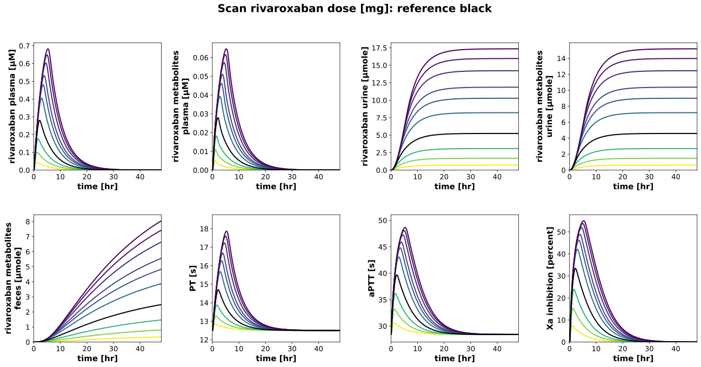
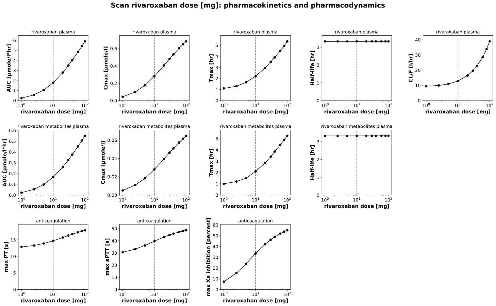
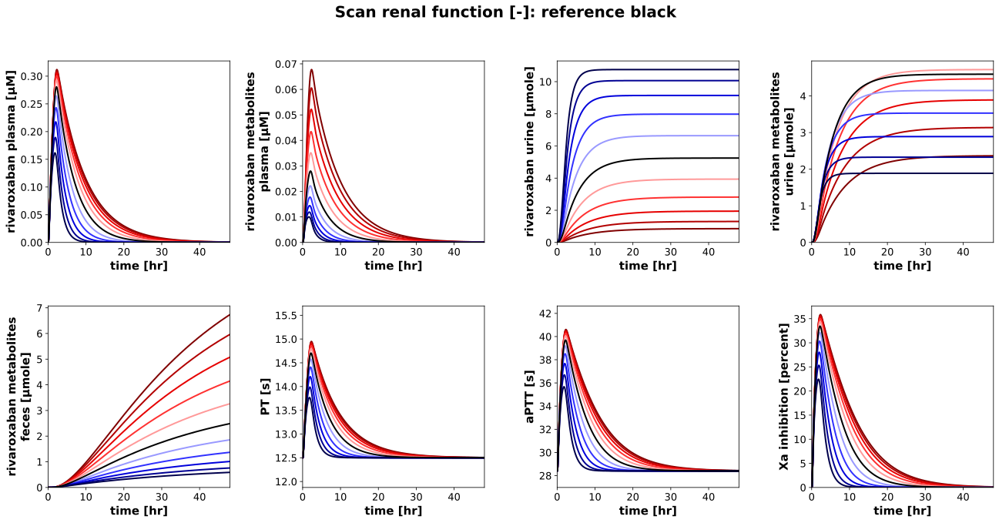
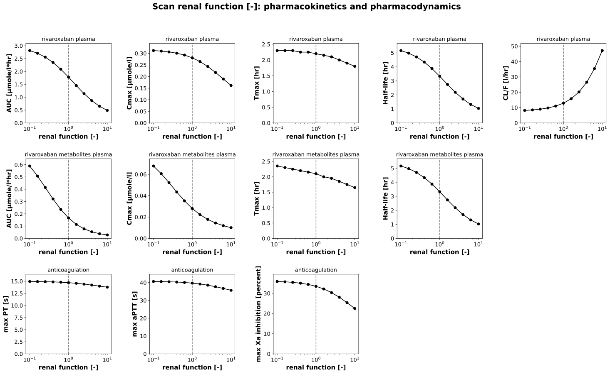
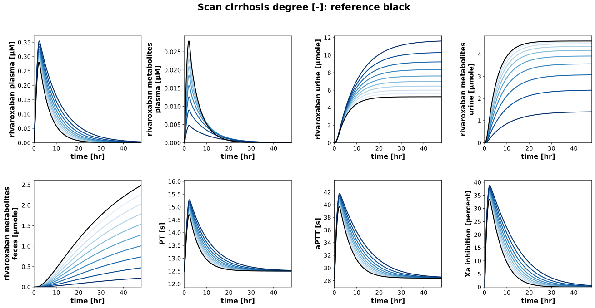
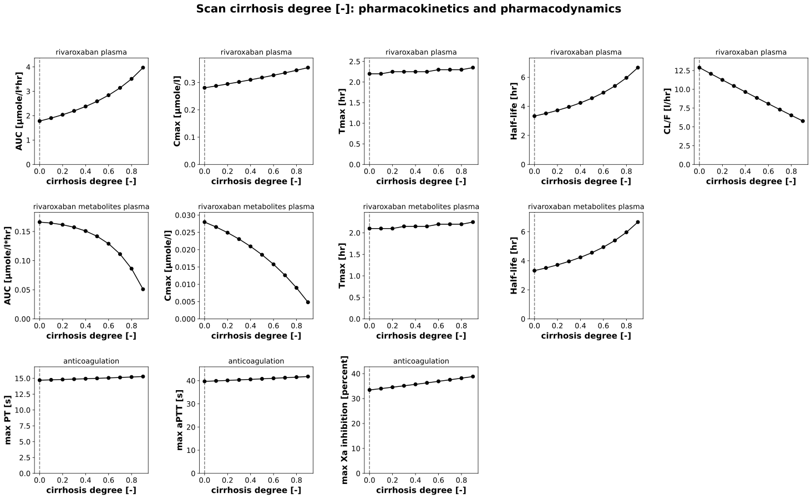
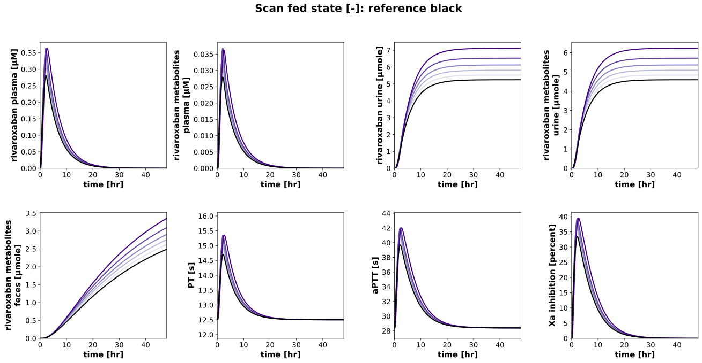
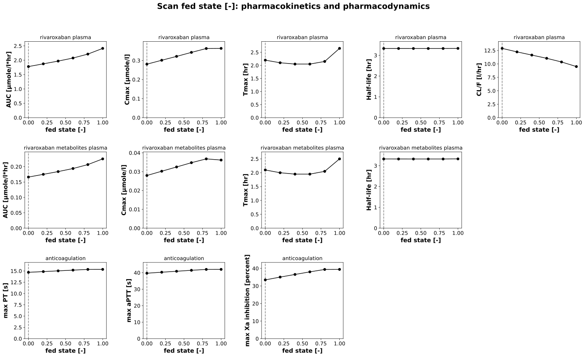

Overview
Models
| model | source |
|---|---|
| model | rivaroxaban_body_flat.xml |
Datasets
The experiment has no datasets.
Figures (8)
















Code
"""Parameter scans of rivaroxaban: the dose, the renal function, cirrhosis and food."""
from collections.abc import Mapping
from typing import ClassVar, TypedDict, override
import matplotlib
import matplotlib.pyplot as plt
import numpy as np
import pandas as pd
from matplotlib.axes import Axes
from matplotlib.colors import Colormap
from matplotlib.typing import ColorType
from pkpdsim.scan import point_band, point_timecourse, scan_dimensions, start_values
from sbmlsim import Q
from sbmlsim.plot.serialization_matplotlib import FigureMPL
from sbmlsim.result import ScanResult
from sbmlsim.simulation import Dimension, Scan, Simulation
from sbmlsim.units import Quantity
from pkdb_models.models.rivaroxaban import MODEL
from pkdb_models.models.rivaroxaban.experiments.base_experiment import (
RivaroxabanSimulationExperiment,
)
from pkdb_models.models.rivaroxaban.rivaroxaban_pk import (
calculate_rivaroxaban_pd,
summarize,
)
class ScanSpec(TypedDict):
"""Definition of a parameter scan."""
parameter: str
#: the values of the parameter, which contain the reference
range: np.ndarray
units: str
#: the value of the scan in the simulations of the other scans
reference: float
label: str
#: a logarithmic axis of the scanned parameter
log: bool
#: the colormap from the lowest to the highest value
colormap: str
class RivaroxabanParameterScan(RivaroxabanSimulationExperiment):
"""Scan the effect of parameters on the pharmacokinetics and the anticoagulation.
A single oral dose of 10 mg rivaroxaban as a tablet, fasted, in a healthy
liver and kidney, followed for 4 days (the half-life is 3 to 5 hr, longer
in severe renal impairment and cirrhosis). Scanned are the dose (1 to
100 mg; the dissolution saturates above 10 mg), the renal function (0.1 to
10, logarithmic), the degree of cirrhosis (0 to 0.9) and the fed state
(0, fasted, to 1, fed); the figures show the first 2 days of the
timecourses of rivaroxaban and its metabolites in plasma, their excretion
and the anticoagulant effects (PT, aPTT, inhibition of factor Xa), and the
pharmacokinetic parameters of the non-compartmental analysis
(`rivaroxaban_pk`) and the maxima of the effects over the scanned
parameter.
In a run over the draws of the fitted parameters (`run_simulation
pkdb_models.models.rivaroxaban --uncertainty`) every point of a scan is
simulated for every draw; the figures draw the median of the draws with the
band of their quantiles.
"""
#: the end of the simulations [hr]
tend = 96
#: the output times [hr]: every 0.05 hr in the first day (absorption and
#: maximum, tmax 0.5 to 4 hr), every 0.5 hr after it
times: ClassVar[tuple[float, ...]] = tuple(
np.unique(
np.concatenate([np.linspace(0, 24, 481), np.linspace(24, tend, 145)])
).tolist()
)
#: the end of the time axis of the timecourses [hr]
tend_plot = 48
#: the opacity of the bands of the draws
band_alpha = 0.15
#: the oral dose of the scans [mg]
dose_riv = 10.0
#: the variables of the timecourses
timecourses: ClassVar[tuple[str, ...]] = (
"[Cve_riv]",
"[Cve_rx]",
"Aurine_riv",
"Aurine_rx",
"Afeces_rx",
"PT",
"aPTT",
"Xa_inhibition",
)
#: the pharmacokinetic parameters of the substances of `rivaroxaban_pk`
pk_parameters: ClassVar[dict[str, tuple[str, ...]]] = {
"riv": ("auc_inf_obs", "cmax", "tmax", "thalf", "cl_f"),
"rx": ("auc_inf_obs", "cmax", "tmax", "thalf"),
}
pk_names: ClassVar[dict[str, str]] = {
"riv": "rivaroxaban plasma",
"rx": "rivaroxaban metabolites plasma",
}
#: the effects whose maximum is drawn over the scanned parameter
effects: ClassVar[tuple[str, ...]] = ("PT", "aPTT", "Xa_inhibition")
pk_labels: ClassVar[Mapping[str, str]] = {
"auc_inf_obs": "AUC",
"cmax": "Cmax",
"tmax": "Tmax",
"thalf": "Half-life",
"cl_f": "CL/F",
"PT": "max PT",
"aPTT": "max aPTT",
"Xa_inhibition": "max Xa inhibition",
}
pk_units: ClassVar[Mapping[str, str]] = {
"auc_inf_obs": "µmole/l*hr",
"cmax": "µmole/l",
"tmax": "hr",
"thalf": "hr",
"cl_f": "l/hr",
"PT": "s",
"aPTT": "s",
"Xa_inhibition": "percent",
}
scan_map: ClassVar[dict[str, ScanSpec]] = {
"dose": {
"parameter": "PODOSE_riv",
"range": np.array([1, 2.5, 5, 10, 20, 30, 40, 60, 80, 100], dtype=float),
"units": "mg",
"reference": dose_riv,
"label": "rivaroxaban dose [mg]",
"log": True,
"colormap": "viridis_r",
},
"renal": {
"parameter": "KI__f_renal_function",
"range": np.logspace(-1, 1, num=11),
"units": "dimensionless",
"reference": 1.0,
"label": "renal function [-]",
"log": True,
"colormap": "seismic_r",
},
"hepatic": {
"parameter": "f_cirrhosis",
"range": np.linspace(0, 0.9, num=10),
"units": "dimensionless",
"reference": 0.0,
"label": "cirrhosis degree [-]",
"log": False,
"colormap": "Blues",
},
"food": {
"parameter": "GU__fed",
"range": np.linspace(0, 1, num=6),
"units": "dimensionless",
"reference": 0.0,
"label": "fed state [-]",
"log": False,
"colormap": "Purples",
},
}
font: ClassVar[dict[str, str | int]] = {"weight": "bold", "size": 15}
tick_font_size = 13
def _reference_changes(self, parameter: str) -> dict[str, Quantity | float]:
"""Get the changes of the reference without the scanned parameter.
The reference is the dose of 10 mg, fasted, in a healthy liver and
kidney; the scanned parameter is set by the dimension of the scan.
"""
changes: dict[str, Quantity | float] = {
**self.default_changes(),
**{
spec["parameter"]: Q(spec["reference"], spec["units"])
for spec in self.scan_map.values()
},
}
changes.pop(parameter)
return changes
@override
def simulations(self) -> dict[str, Scan]:
return {
f"scan_{key}": Scan(
simulation=Simulation(
time_unit="hr",
end=self.tend,
times=self.times,
preinit_changes=self._reference_changes(spec["parameter"]),
),
dimensions=[
Dimension(
"dim_scan",
values={spec["parameter"]: Q(spec["range"], spec["units"])},
),
],
)
for key, spec in self.scan_map.items()
}
def _across(self) -> str | None:
"""Get the dimension of the draws of the fitted parameters, `None` without."""
return None if self.uncertainty is None else self.uncertainty.id
def _axis_values(self, res: ScanResult, spec: ScanSpec) -> np.ndarray:
"""Get the values of the axis of the scanned parameter at the points."""
pid = spec["parameter"]
values = start_values(res, pid)
across = self._across()
if across is not None:
values = values.isel({across: 0})
scanned = Q(values.values, res.units[pid]).to(spec["units"]).magnitude
return np.asarray(scanned, dtype=float)
@staticmethod
def _color(spec: ScanSpec, value: float, cmap: Colormap) -> ColorType:
"""Get the color of a value of a scan, black for the reference."""
if np.isclose(value, spec["reference"]):
return "black"
vmin, vmax = float(np.min(spec["range"])), float(np.max(spec["range"]))
if spec["log"]:
position = (np.log10(value) - np.log10(vmin)) / (
np.log10(vmax) - np.log10(vmin)
)
else:
position = (value - vmin) / (vmax - vmin)
return cmap(float(position))
@staticmethod
def _unit(units: Mapping[str, str], sid: str) -> str:
"""Get the unit of a variable in the figures, the inhibition in percent."""
return "percent" if sid == "Xa_inhibition" else units[sid]
def _timecourse(
self, ax: Axes, res: ScanResult, sid: str, index: int, color: ColorType
) -> tuple[np.ndarray, np.ndarray, float, float]:
"""Get the timecourse of a point of a scan, drawing the band of its draws.
Returns:
The time and the values in the units of the figure, the median of
the draws in a run over them, and the minimum and the maximum of
the values or of the band on the time axis of the figure.
"""
(scandim,) = scan_dimensions(res, self._across())
run = self.uncertainty
if run is None:
time, values = point_timecourse(res, sid, **{scandim: index})
else:
time, lower, values, upper = point_band(
res, sid, across=run.id, quantiles=run.quantiles, **{scandim: index}
)
unit = self._unit(self.units, sid)
t_vec = Q(time, res.units["time"]).to(self.units["time"]).magnitude
c_vec = Q(values, res.units[sid]).to(unit).magnitude
shown = t_vec <= self.tend_plot
bottom = float(np.nanmin(c_vec[shown]))
top = float(np.nanmax(c_vec[shown]))
if run is not None:
lower_vec = Q(lower, res.units[sid]).to(unit).magnitude
upper_vec = Q(upper, res.units[sid]).to(unit).magnitude
ax.fill_between(
t_vec,
lower_vec,
upper_vec,
color=color,
alpha=self.band_alpha,
linewidth=0,
)
bottom = min(bottom, float(np.nanmin(lower_vec[shown])))
top = max(top, float(np.nanmax(upper_vec[shown])))
return t_vec, c_vec, bottom, top
def _maxima(self, res: ScanResult) -> pd.DataFrame:
"""Get the maxima of the effects at every point of a scan.
Returns:
One row per point (and draw), the columns `point`, `draw` (with
draws) and per effect its maximum and its unit (`<effect>_unit`).
"""
across = self._across()
dfs = calculate_rivaroxaban_pd(res, across=across)
columns = ["point", *(["draw"] if across is not None else [])]
df = dfs[self.effects[0]][columns].copy()
for sid in self.effects:
df[sid] = dfs[sid]["max"].to_numpy(dtype=float)
df[f"{sid}_unit"] = dfs[sid]["unit"].to_numpy()
return df
def _summary(
self, df: pd.DataFrame, key: str, target: str
) -> tuple[np.ndarray, np.ndarray | None, np.ndarray | None]:
"""Get a parameter at the points of a scan, the median and the band of the draws.
Returns:
The values (the median of the draws in a run over them), and the
lower and the upper quantile, `None` without draws.
"""
unit = df[f"{key}_unit"].iloc[0]
run = self.uncertainty
if run is None:
return (
Q(df[key].to_numpy(dtype=float), unit).to(target).magnitude,
None,
None,
)
summary = summarize(df, key, run.quantiles)
median, lower, upper = (
Q(summary[column].to_numpy(), unit).to(target).magnitude
for column in ["median", "lower", "upper"]
)
return median, lower, upper
@override
def figures_mpl(self) -> dict[str, FigureMPL]:
figures: dict[str, FigureMPL] = {}
keys = [f"scan_{key}" for key in self.scan_map]
pk_dfs = self.calculate_rivaroxaban_pk(scans=keys, across=self._across())
for key, spec in self.scan_map.items():
res = self.results[f"task_scan_{key}"]
figures[f"fig_timecourse_{key}"] = self._figure_timecourses(key, spec, res)
figures[f"fig_pk_{key}"] = self._figure_pharmacokinetics(
spec, res, pk_dfs[f"scan_{key}"]
)
return figures
def _figure_timecourses(
self, key: str, spec: ScanSpec, res: ScanResult
) -> FigureMPL:
"""Timecourses of a scan, the reference in black.
Raises:
ValueError: if the reference is not a point of the scan.
"""
cmap = matplotlib.colormaps[spec["colormap"]]
x_vec = self._axis_values(res, spec)
references = [
k for k, x in enumerate(x_vec) if np.isclose(x, spec["reference"])
]
if not references:
raise ValueError(f"The reference is not a point of the scan '{key}'.")
ncols = 4
nrows = (len(self.timecourses) + ncols - 1) // ncols
f: FigureMPL
f, axes = plt.subplots(
nrows=nrows, ncols=ncols, figsize=(5.5 * ncols, 5 * nrows)
)
f.subplots_adjust(wspace=0.4, hspace=0.35)
f.suptitle(
f"Scan {spec['label']}: reference black", fontsize=20, fontweight="bold"
)
for ax, sid in zip(axes.flatten(), self.timecourses, strict=True):
ymin, ymax = np.inf, 0.0
# the reference last, on top
for index in [k for k in range(len(x_vec)) if k not in references] + [
references[0]
]:
color = self._color(spec, float(x_vec[index]), cmap)
t_vec, c_vec, bottom, top = self._timecourse(ax, res, sid, index, color)
ymin, ymax = min(ymin, bottom), max(ymax, top)
ax.plot(t_vec, c_vec, color=color, linewidth=2.0)
ax.set_xlim(0, self.tend_plot)
# the clotting times start at their baseline, not at 0
low = 0.95 * ymin if sid in ("PT", "aPTT") else 0.0
ax.set_ylim(bottom=low, top=1.05 * ymax if ymax > 0 else 1.0)
ax.tick_params(axis="both", labelsize=self.tick_font_size)
ax.set_xlabel(
f"{self.label_time} [{self.units['time']}]", fontdict=self.font
)
unit = self._unit(self.units, sid).replace("dimensionless", "-")
ax.set_ylabel(f"{self.labels[sid]} [{unit}]", fontdict=self.font)
return f
def _figure_pharmacokinetics(
self, spec: ScanSpec, res: ScanResult, df: pd.DataFrame
) -> FigureMPL:
"""Pharmacokinetic parameters of the substances and the maxima of the effects."""
x_vec = self._axis_values(res, spec)
maxima = self._maxima(res)
rows: list[list[tuple[str, pd.DataFrame, str]]] = [
[
(key, df[df["substance"] == substance], self.pk_names[substance])
for key in parameters
]
for substance, parameters in self.pk_parameters.items()
]
rows.append([(sid, maxima, "anticoagulation") for sid in self.effects])
ncols = max(len(row) for row in rows)
nrows = len(rows)
f: FigureMPL
f, axes = plt.subplots(
nrows=nrows, ncols=ncols, figsize=(5 * ncols, 4.5 * nrows)
)
f.subplots_adjust(wspace=0.45, hspace=0.45)
f.suptitle(
f"Scan {spec['label']}: pharmacokinetics and pharmacodynamics",
fontsize=20,
fontweight="bold",
)
for krow, panels in enumerate(rows):
for kcol in range(ncols):
ax: Axes = axes[krow, kcol]
if kcol >= len(panels):
ax.set_axis_off()
continue
key, data, name = panels[kcol]
target = self.pk_units[key]
y_vec, y_lower, y_upper = self._summary(data, key, target)
if y_lower is not None and y_upper is not None:
ax.fill_between(
x_vec,
y_lower,
y_upper,
color="black",
alpha=self.band_alpha,
linewidth=0,
)
top = float(np.nanmax(y_upper))
else:
top = float(np.nanmax(y_vec))
ax.axvline(x=spec["reference"], color="grey", linestyle="--")
ax.plot(
x_vec,
y_vec,
marker="o",
linestyle="-",
color="black",
markeredgecolor="black",
)
if spec["log"]:
ax.set_xscale("log")
# a margin above keeps a constant curve inside the axes
ax.set_ylim(bottom=0.0, top=1.1 * top if top > 0 else 1.0)
ax.tick_params(axis="both", labelsize=self.tick_font_size)
ax.set_title(name, fontsize=13)
ax.set_xlabel(spec["label"], fontdict=self.font)
ax.set_ylabel(f"{self.pk_labels[key]} [{target}]", fontdict=self.font)
return f
if __name__ == "__main__":
MODEL.run_experiments(RivaroxabanParameterScan, output_dir="scan_parameters")